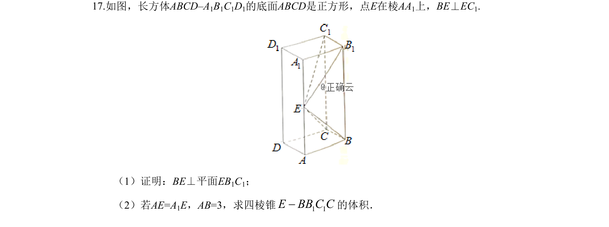
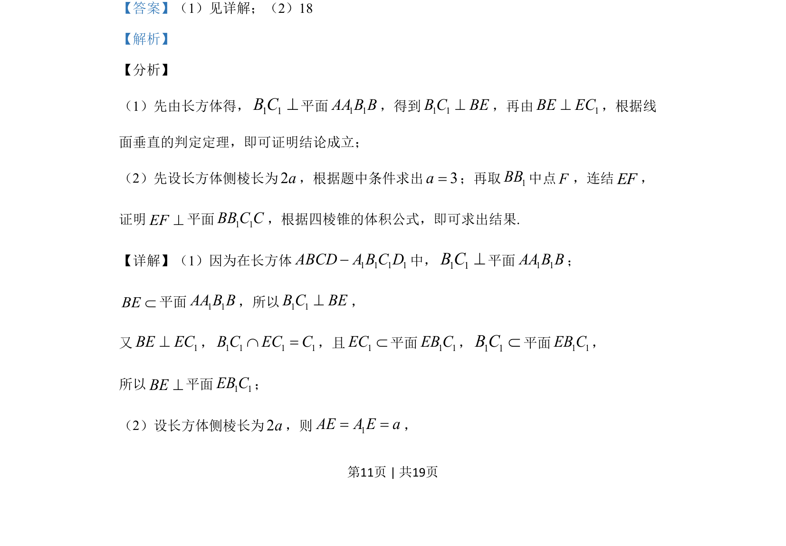
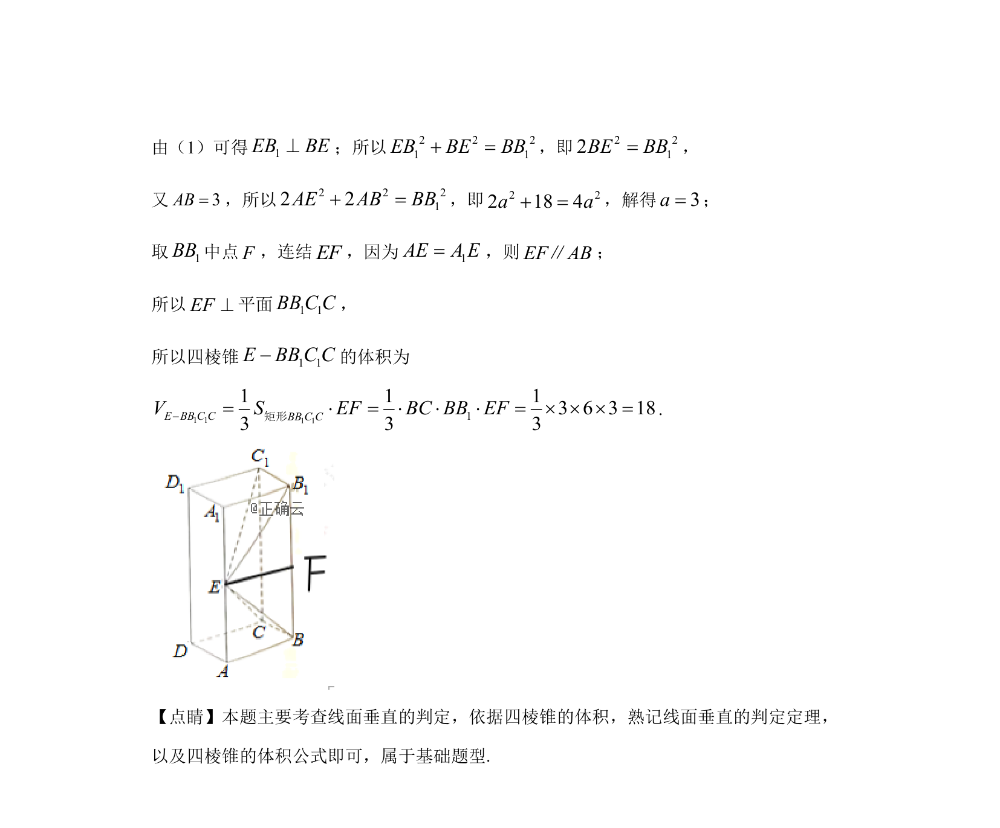

考点：线面垂直 四棱锥体积 空间几何体

考查长方体中线面垂直的证明及四棱锥体积计算


📄 原 PDF 第 11 页：
素材/真题/吉林/2008-2024·（吉林）数学高考真题/2019年高考数学试卷（文）（新课标Ⅱ）（解析卷）.pdf
17.如图，长方体ABCD–A1B1C1D1的底面ABCD是正方形，点E在棱AA1上，BE⊥EC1. （1）证明：BE⊥平面EB1C1； （2）若AE=A1E，AB=3，求四棱锥 1 1E BB C C-的体积．
【答案】（1）见详解；（2）18
【解析】
【分析】
（1）先由长方体得，1 1B C^平面1 1AA B B，得到1 1B C BE^，再由 1BE EC^，根据线
面垂直的判定定理，即可证明结论成立；
（2）先设长方体侧棱长为2a，根据题中条件求出3a=；再取1BB中点F，连结EF，
证明EF^平面1 1BB C C，根据四棱锥的体积公式，即可求出结果.
【详解】（1）因为在长方体 1 1 1 1ABCD A B C D-中，1 1B C^平面1 1AA B B；
BEÌ平面1 1AA B B，所以1 1B C BE^，
又 1BE EC^，1 1 1 1B C EC CÇ =，且1ECÌ平面1 1EB C，1 1B CÌ平面1 1EB C，
所以BE^平面1 1EB C；
（2）设长方体侧棱长为2a，则 1AE A E a= =，